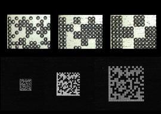
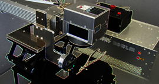

レーザマーキング事業


「BOWLRIXの由来」
測量事業の付随業務においてレーザマーキング装置を導入したのが始まりです。素材適応性や可読性の高いレーザマーキング手法を研究する中でBOWLRIXのコンセプトが生まれました。
BOWLRIX は、レーザードットをマトリクス状に配置(Bowl Matrix)するレーザマーキング手法です。平成8年に、BOWLRIXによる2次元コードのセルの形成に関する特許を日米で取得しました。
BOWLRIX は、レーザードットをマトリクス状に配置(Bowl Matrix)するレーザマーキング手法です。平成8年に、BOWLRIXによる2次元コードのセルの形成に関する特許を日米で取得しました。
「事業内容」
BOWLRIX事業は、レーザマーキングシステムの製造販売及びレーザマーキングサービスから成り立っています。BOWLRIX レーザーシステムは、レーザマーキング装置とガルバノスキャナ、そして制御ソフトウェアを含む統合的なシステムを提供します。また、BOWLRIXマーキングサービスでは、被マーキング素材に対して個別的に最適化されたレーザマーキングにより、お客様の多様なニーズにお答えします。
「測量業務支援」
レーザーシステムの構築で培った技術力によって、当社の測量業務を支援する様々なソフトウェアの開発も行っています。
BOWLRIX 登記簿アナライザー(BRA) は、不動産登記簿PDF をテキスト化し、それを整形・解析して、登記簿情報の帳票を出力します。これによって、土地調書作成業務（登記簿と公図を基に、土地情報の一覧を作成する）等の効率化に寄与しています。BOWLRIXマップナビゲーション(BMN）は、任意の点検業務を支援します。点検対象の情報をマップ上に表示して点検者をGPSでナビゲートします。マップ上から点検項目の編集・サーバー送信も可能です。
BOWLRIX 登記簿アナライザー(BRA) は、不動産登記簿PDF をテキスト化し、それを整形・解析して、登記簿情報の帳票を出力します。これによって、土地調書作成業務（登記簿と公図を基に、土地情報の一覧を作成する）等の効率化に寄与しています。BOWLRIXマップナビゲーション(BMN）は、任意の点検業務を支援します。点検対象の情報をマップ上に表示して点検者をGPSでナビゲートします。マップ上から点検項目の編集・サーバー送信も可能です。